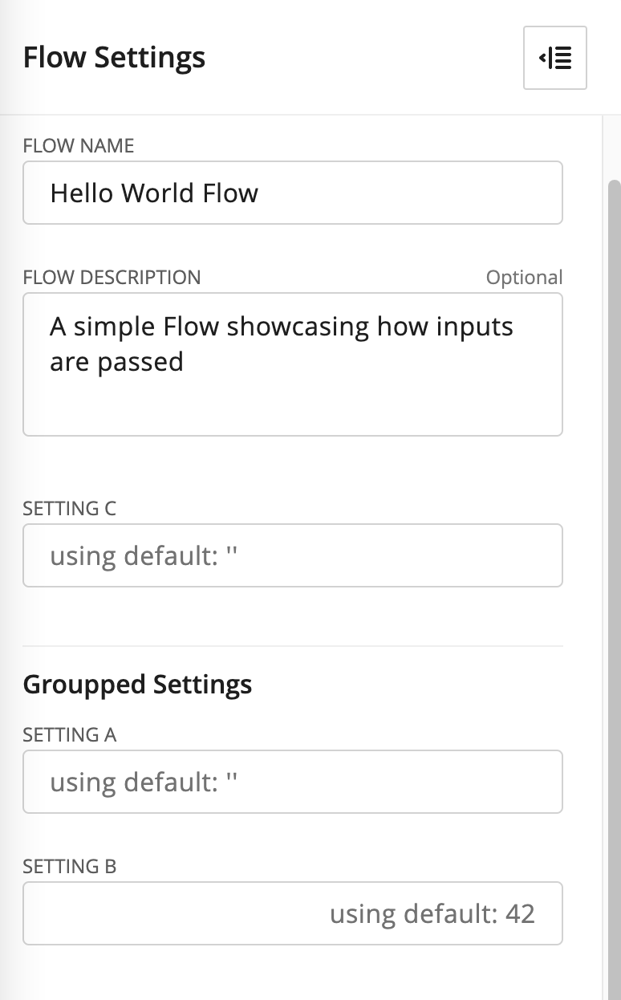

Source Documentation
blocks.py
- class flows_sdk.blocks.Block(reference_name, identifier, input=None, title=None, description=None)
Bases:
objectBase structure representing an executable within a Hyperscience deployment. Available blocks depend on the version of the underlying Hyperscience platform, but additional blocks may have also been manually installed. Check out IDP Library for example blocks used for the Document Processing flow that comes with V32.
- Parameters
reference_name (
str) – unique identifier on a per-Flow basis, used to identify the concrete block within a Flow (e.g., in order to reference the outputs of a concrete block)identifier (
str) – block implementation that will be used at runtime (e.g., MACHINE_CLASSIFICATION). Multiple blocks with same identifier can be present in a Flow.input (
Optional[Dict[str,Any]]) –key-value dict being passed during execution of the Block. Can both have static values or various dynamic values (e.g., output from a previously executed block, see
flows_sdk.blocks.Block.output()). Most blocks have mandatory inputs, depending on their identifier. For example:{ 'a': 42, 'b': 'foo', 'c': some_previous_block.output(), 'd': another_previous_block.output('nested.path') }
title (
Optional[str]) – UI-visible title of the block.description (
Optional[str]) – Description of the block. Both useful for documentation purpose and visible to users in the Flow studio.
- output(key=None)
Used to reference the output of a block that has already been executed. For example, if we have a Flow with two blocks, the second can reference the output of the first as part of its inputs.
- Parameters
key (Optional[str]) – When not provided, the entire output of the referenced block will be passed along. When provided, will pass a concrete key from the output (e.g. for an output like
{"a": 42}, callingoutput()will pass it as a dictionary, while callingoutput("a")will pass42.)- Returns
a string-formatted reference that will be unpacked to a value during runtime.
- Return type
str
For example:
a = Block(...) b = Block( ..., input = { 'foo': a.output('bar') } )
- class flows_sdk.blocks.CodeBlock(reference_name, code, code_input=None, input=None, title=None, description=None)
Bases:
flows_sdk.blocks.BlockCode blocks are a special type of block that can run custom python code on the Hyperscience platform. Code will be serialized, then, as part of a Flow run, executed on an isolated environment and will not have access to dependencies outside of basic ones like the standard python library.
Lambda functions are executed in the context of the execution engine itself (less overhead, but cannot be scaled) Code functions are executed in a dedicated container (more overhead, can scale horizontally)
Example usage with a code function:
def code_fn(a_static_input: int, a_dynamic_input: str) -> str: return f'Hello {code_block_input_param}' function_ccb = CodeBlock( reference_name='example_function_ccb', code=code_fn, code_input={ 'a_static_input': 42, 'a_dynamic_input': some_previous_block.output('path.to.value') }, )
Example usage with a lambda:
lambda_ccb = CodeBlock( reference_name='example_lambda_ccb', code=lambda a_static_input, a_dynamic_input: { 'foo': f'prefix_{a_dynamic_input}', 'bar': 5 + a_static_input }, code_input={ 'a_static_input': 42, 'a_dynamic_input': some_previous_block.output('path.to.value') }, )
- output(key=None)
Used to reference the output of a block that has already been executed. For example, if we have a Flow with two blocks, the second can reference the output of the first as part of its inputs.
- Parameters
key (Optional[str]) – When not provided, the entire output of the referenced block will be passed along. When provided, will pass a concrete key from the output (e.g. for an output like
{"a": 42}, callingoutput()will pass it as a dictionary, while callingoutput("a")will pass42.)- Returns
a string-formatted reference that will be unpacked to a value during runtime.
- Return type
str
For example:
a = Block(...) b = Block( ..., input = { 'foo': a.output('bar') } )
- class flows_sdk.blocks.Fork(reference_name, branches, title=None, description=None)
Bases:
flows_sdk.blocks.BlockFork is a system block that is used to schedule other blocks for parallel execution.
While all branches of a Fork will be scheduled for parallel execution, the tasks within a branch itself will be executed serially.
The output of a Fork is a dictionary with key: identifier of the output block from each branch and value: the output from that block
- Parameters
reference_name (str) – unique identifier on a per-Flow basis
branches (Sequence[Fork.Branch]) – A sequence of branches, that will be scheduled for parallel execution.
title (Optional[str]) – UI-visible title of the block.
description (Optional[str]) – Description of the block. Both useful for documentation purpose and visible to users in the Flow studio.
from typing import Any from uuid import UUID from flows_sdk.blocks import CodeBlock, Fork from flows_sdk.flows import Flow, Manifest from flows_sdk.package_utils import export_flow def entry_point_flow() -> Flow: return example_flow_with_fork() def example_flow_with_fork() -> Flow: ccb_A_1 = CodeBlock( reference_name='ccb_A_1', code=lambda _: {'a': 'response from A 1'}, code_input={'_': None} ) ccb_A_2 = CodeBlock( reference_name='ccb_A_2', code=lambda _: {'a': 'response from A 2'}, code_input={'_': None} ) # Note that both ccb_A_1 and ccb_A_2 will be executed in this branch sequentially, # but because of output=ccb_A_1._reference_name, only it will "ccb_A_1" will have its output # as a key under "fork_output" (check sample output in the comment below) branch_A = Fork.Branch(blocks=[ccb_A_1, ccb_A_2], label='first', output=ccb_A_1._reference_name) ccb_B = CodeBlock( reference_name='ccb_B', code=lambda _: {'b': 'response from B'}, code_input={'_': None} ) branch_B = Fork.Branch(blocks=[ccb_B], label='second', output=ccb_B._reference_name) fork = Fork(reference_name='a_fork', branches=[branch_A, branch_B]) def print_function(fork_output: Any) -> None: print(fork_output) return # { # "ccb_A_1": { # "result": { # "a": "response from A 1" # } # }, # "ccb_B": { # "result": { # "b": "response from B" # } # } # } print_ccb = CodeBlock( reference_name='print_ccb', code=print_function, code_input={'fork_output': fork.output()} ) return Flow( depedencies={}, title='Fork sample flow', description='A simple Flow showcasing how a Fork is used', blocks=[fork, print_ccb], owner_email='flows@hyperscience.com', manifest=Manifest(identifier='fork_example', input=[]), uuid=UUID('3e3ab564-fcf5-41fb-a573-4bc2fd153b6d'), input={}, ) if __name__ == '__main__': export_flow(flow=entry_point_flow())
- class Branch(blocks, label=None, output=None)
Bases:
flows_sdk.blocks._BranchA collection of Blocks that will be serially scheduled for execution.
- Parameters
blocks (Sequence[Block]) – A sequence of Blocks that will be executed as part of that Fork.Branch. Should contain at least one.
label (Optional[str]) – UI-visible text lable of the branch.
output (Optional[str]) – Reference name of the Block which will be used as the output of the entire branch. When not provided, the output of the last block of the branch will be treated as the branch output.
- class flows_sdk.blocks.Routing(reference_name, decision, branches, default_branch=None, title=None, description=None)
Bases:
flows_sdk.blocks.BlockRouting is a system Block that executes only the blocks in one of its branches that meets a condition. Similar in concept to a switch..case or an if/else construction.
- Parameters
reference_name (
str) – [description]decision (
str) – [description]branches (
Sequence[Branch]) – [description]default_branch (
Optional[DefaultBranch]) – [description], defaults to Nonetitle (
Optional[str]) – [description], defaults to Nonedescription (
Optional[str]) – [description], defaults to None
from typing import Any from uuid import UUID from flows_sdk.blocks import CodeBlock, Routing from flows_sdk.flows import Flow, Manifest def entry_point_flow() -> Flow: return example_flow_with_routing() def example_flow_with_routing() -> Flow: decision_ccb = CodeBlock( reference_name='decision_ccb', code=lambda a_char: {'some_field': a_char}, code_input={'a_char': 'A'}, ) ccb_A = CodeBlock( reference_name='ccb_A', code=lambda _: {'a': 'response from A'}, code_input={'_': None} ) branch_A = Routing.Branch(case='A', blocks=[ccb_A], label='first', output=ccb_A._reference_name) ccb_B = CodeBlock( reference_name='ccb_B', code=lambda _: {'b': 'response from B'}, code_input={'_': None} ) default_branch = Routing.DefaultBranch( blocks=[ccb_B], label='default', output=ccb_B._reference_name ) # 'decision' is like a switch..case statement - when a Branch 'case' is matched, it will be # scheduled for execution. If no case matches, a 'default_branch' can be defined as fallback. routing = Routing( reference_name='a_routing', decision=decision_ccb.output('some_field'), branches=[branch_A], default_branch=default_branch, ) def print_function(routing_output: Any) -> None: print(routing_output) return # "routing_output": { # "result": { # "a": "response from A" # } # } print_ccb = CodeBlock( reference_name='print_ccb', code=print_function, code_input={'routing_output': routing.output()}, ) return Flow( depedencies={}, title='Routing sample flow', description='A simple Flow showcasing how Routing is used', blocks=[decision_ccb, routing, print_ccb], owner_email='flows@hyperscience.com', manifest=Manifest(identifier='routing_example', input=[]), uuid=UUID('4e3ab564-fcf5-41fb-a573-4bc2fd153b6d'), input={}, )
- class Branch(case, blocks, label=None, output=None)
Bases:
flows_sdk.blocks._Branch[summary]
- Parameters
case (str) – case that must be matched in order for this branch to be scheduled for execution.
blocks (Sequence[Block]) – sequence of blocks to be executed as part of this branch
label (Optional[str]) – UI-visible text lable of the branch
output (Optional[str]) – Reference name of the Block which will be used as the output of the entire branch. When not provided, the output of the last block of the branch will be treated as the branch output.
- class DefaultBranch(blocks, label=None, output=None)
Bases:
flows_sdk.blocks._BranchSame as
flows_sdk.blocks.Routing.Branch, but without a case. DefaultBranch is optionally provided and executed as a fallback when there is no matching case from other branches.
- class flows_sdk.blocks.IOBlock(reference_name, identifier, enabled, input=None, title=None, description=None)
Bases:
flows_sdk.blocks.BlockA Block that has the additional boolean property enabled. Used for Triggers and Outputs where enabled can be triggered via the Flow Studio UI and is considered during processing (e.g. only enabled Triggers can initiate Flow execution).
See
flows_sdk.blocks.Blockfor description of the inherited parameters.- Parameters
enabled (bool) – on-off state of the Block. Visualized as a checkbox and taken into account during processing.
- class flows_sdk.blocks.Outputs(reference_name, role_filter, input_template, blocks, title=None, description=None)
Bases:
flows_sdk.blocks.BlockOutputs is a special block-section meant to provide an easy way for users to configure Flow output connections through the UI. They contain a list of output blocks, that can optionally be filtered by role and define an input template that will wire these blocks’ inputs automatically after the user adds them.
- Parameters
reference_name (
str) – unique identifier on a per-Flow basis, used to identify the concrete block within a Flow (e.g., in order to reference the outputs of a concrete block)role_filter (
List[str]) – Serves as an instruction to the UI for what blocks are allowed in this output section, since not all output blocks will be suitable for all flows. UI will allow adding only blocks that have all listed roles. If empty, blocks with any role will be allowed.input_template (
Dict[str,Any]) – Used by the UI to automatically pre-populate the input of newly added blocks. Thus the Flow designer can define the wiring of output blocks to the results from previous blocks in the Flow, while allowing the user to add or remove output blocks via the UI.blocks (
Sequence[IOBlock]) – List of output IOBlocks for sending results to external systems. Can be empty, since the outputs within an Outputs section are editable in Flow studio.title (
Optional[str]) – UI-visible title of the block.description (
Optional[str]) – Description of the block. Both useful for documentation purpose and visible to users in the Flow studio.
flows.py
- pydantic model flows_sdk.flows.Dependency
Bases:
flows_sdk.flows._BaseModel- field condition: Dict[str, Any] [Required]
- field override: Dict[str, Any] [Required]
- pydantic model flows_sdk.flows.Parameter
Bases:
flows_sdk.flows._BaseModel- Fields
- field dependencies: Optional[List[flows_sdk.flows.Dependency]] = None
Internal mechanism for describing dependencies between fields (e.g. show A when B is checked, hide A when B is unchecked)
- field description: Optional[str] [Required]
UI-visible description of the field
- field json_schema: Optional[Dict[str, Any]] [Required] (alias 'schema')
Defines a format for the field using the JSON Schema specification (https://json-schema.org/understanding-json-schema/). Field values will be validated against this format when a flow is imported or edited.
- field name: str [Required]
Must be a valid Python identifier
- field optional: bool = False
True when the field can be omitted, False when it is mandatory. The default value is False, i.e. if the optional flag is not specified, the field will be considered mandatory.
- field secret: Optional[bool] [Required]
UI-hint that the field should be presented as a secret (hidden symbols) rather than plain text.
- field title: Optional[str] [Required]
UI-visible representation of the field name
- field type: str [Required]
Json-schema-like type (e.g. string, integer, number, array, object…) Between Hyperscience platform versions there are also extensions like:
Percentage (number between 0 and 1)
UUID (string in UUID format or null)
MultilineText (string, but represented as multiline text box in Flow studio)
Depending on the Hyperscience version, other supported types may also exist, some of which allow for specific rendering in UI.
- field ui: Optional[Dict[str, Any]] = None
Presentation-related customizations for the field
- field value: Any = None
Optional default value of the field, used when its value is not specified explicitly in the inputs
- pydantic model flows_sdk.flows.InputDefinition
Bases:
flows_sdk.flows._BaseModelDeclaratively defines what parameters are expected, usually part of a Manifest.
- Fields
- Validators
_validate_input»input
- field input: List[flows_sdk.flows.Parameter] [Required]
All parameters that are part of this definition
- Validated by
_validate_input
- field ui: Optional[Dict[str, Any]] = None
Presentation-related customizations for how fields are grouped together. ui[‘groups’] defines how fields are grouped together in the UI and specifies the group titles. groups are optional - if omitted, every input field is listed in the “default” group. If any fields are not included in any group, then they are shown as part of the “default” group of non-nested fields.
example:
ui: { groups: [ { title: 'Group 1', fields: [ 'layout_release_uuid', 'policy', ], }, { title: 'Group 2', fields: ['accuracy'], }, ] }
- pydantic model flows_sdk.flows.Manifest
Bases:
flows_sdk.flows.InputDefinitionDescribes how the Flow studio should present the Flow/Block. The parameters are displayed in the Flow studio and can be futher customized into sections via. the ui section.
Inputs are used both for visualization and for validation - for example, in the
flows_sdk.flows.Flowmanifest.input, if a string is passed for a parameter defined as number in the manifest, the user will be prompted toHere is an example of how the manifest is visualized on the Flow level with
flows_sdk.flows.Parametergroupped under Classification and Identificationexample:
Manifest( identifier='CUSTOM_FLOW', input=[ Parameter( name='setting_a', type='string', title='Setting A', value='' ), Parameter( name='setting_b', type='number', title='Setting B', value=42 ), Parameter( name='setting_c', type='string', title='Setting C', value='' ), ], ui={ 'groups': [ { 'title': 'Groupped Settings', 'fields': [ 'setting_a', 'setting_b', ], }, ] } )
- Fields
- Validators
_validate_output»output
- field enable_overrides: Optional[bool] = None
UI representation of overrides if present. This requires additional API calls and should generally be set to True only when overrides are defined Advanced functionality, contact Hyperscience if you think you need it!
- field identifier: str [Required]
Globally-unique identifier of the block/flow. By convention - all capital snake-case witn an optional numeric suffix (e.g.,
HELLO_FLOW_2)
- field output: Optional[List[flows_sdk.flows.Parameter]] = []
Documents the outputs of the block/flow. For the time being, used for documentation purposes only.
- Validated by
_validate_output
- field roles: List[str] = []
Allows for “tagging” blocks/flows, used by internal features.
{kind=link}
- pydantic model flows_sdk.flows.Triggers
Bases:
flows_sdk.flows._BaseModel- Config
arbitrary_types_allowed: bool = True
- Fields
- field api_params_manifest: Optional[flows_sdk.flows.InputDefinition] [Required]
[deprecated] Defines a shared inputs between all Triggers. Will be replaced in r33+
- field blocks: List[flows_sdk.blocks.IOBlock] [Required]
List of trigger blocks used to initiate the Flow. Can be empty and is modifiable by the Flow studio.
- field description: Optional[str] [Required]
User-facing description
- field processing_block: Optional[flows_sdk.blocks.Block] [Required]
[deprecated] A block that is executed after the Flow is triggered, but before other blocks in the Flow. Instead, add a block in the Flow itself.
- field reference_name: str [Required]
unique reference on a per-Flow basis
- field role_filter: Optional[List[str]] [Required]
Lists the roles that blocks used within this triggers section should have. Blocks should have all listed roles to be compatible. If empty, blocks with any role can be used.
- field title: str [Required]
User-facing title
- pydantic model flows_sdk.flows.Flow
Bases:
flows_sdk.flows._BaseModelFlow is the top-level construct describing the type and order of various components.
Sample usage:
Flow( title='Flow title', # UI visible and editable title description='Flow description' # UI visible and editable description blocks=[ccb], # sequence of blocks in order owner_email='flows@hyperscience.com', manifest=Manifest(identifier='HELLO_FLOW', input=[hello_input_param]), uuid=UUID('2e3ab564-fcf5-41fb-a573-4bc2fd153b6d'), input={'hello_input': 'World'}, )
- Config
arbitrary_types_allowed: bool = True
- Fields
- field blocks: Sequence[flows_sdk.blocks.Block] = []
Sequence of Blocks to be scheduled for execution when the Flow is triggered.
- field description: Optional[str] [Required]
User-editable description of what the Flow is used for.
- field input: Dict[str, Any] = {}
Key-value pairs for top-level inputs of the flow. Their types / UI representations are part of the Manifest.
- field manifest: flows_sdk.flows.Manifest [Required]
- field output: Optional[Dict[str, str]] [Required]
- field owner_email: str [Required]
An email address where the creator of the Flow can be reached.
- field title: str [Required]
User-visible and editable title, does not have to be unique.
- field triggers: Optional[flows_sdk.flows.Triggers] [Required]
Trigger blocks that initiate the Flow.
- field uuid: uuid.UUID [Required]
Unique identifier of the Flow. Should usually be a static value, allowing for iteration over the same Flow in Hyperscience. an easy way to generate one would be to run something like
python -c 'import uuid; print(uuid.uuid4())'in the command line and then pass it as UUID(‘<the_uuid>’)
- field variables: Optional[Dict[str, Any]] [Required]